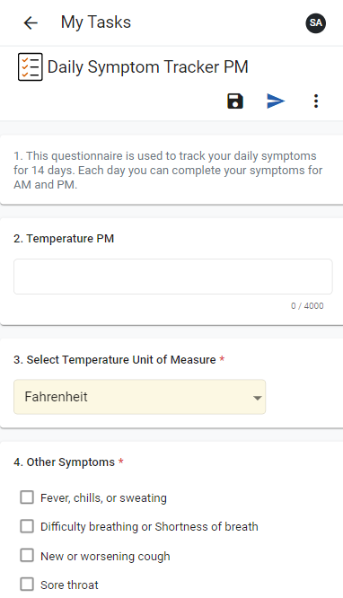

You can also create a new questionnaire by clicking the New Questionnaire icon on the Home screen, and then continuing with the steps below.

Some questions may accept a drawn response, either over an image or in a blank field. If this is the case, a Clear button will display below the question, allowing you to clear your drawn response. You can provide a drawn response using your cursor, or if you are using a tablet or mobile device, using your finger or a stylus.
If applicable, the questionnaire score will display at the top of the questionnaire.
If you are completing a questionnaire for an inspection and a response results in the creation of one or more actions, the message "Actions created. Click to assign" will display. If you click the message, you will be directed to the Action layout where you can complete the action assignment.
Attachments added to questions on an Environmental, Ergonomics, Quality, or Safety Inspection questionnaire can be accessed by the Assignees from the Documents sub list of any corresponding auto-created 'Action' records, and any solutions that support auto-creation of Findings & Actions from a questionnaire (Incident, Audits, Management of Change, etc.)